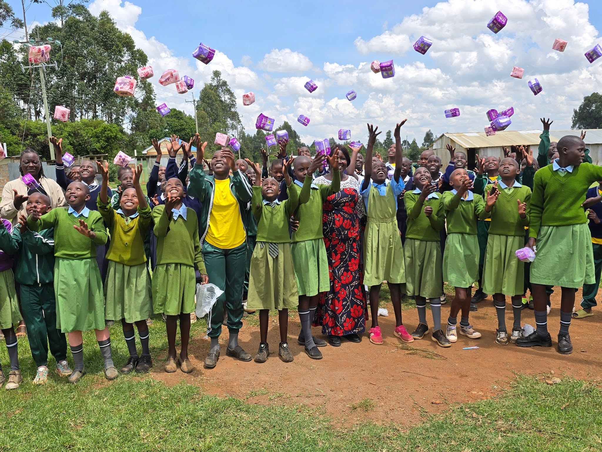
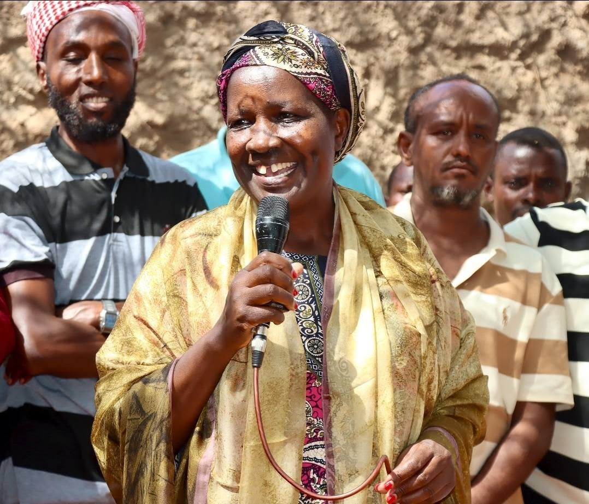

Our Vision
A society where every woman, widow, and young person is seen, valued, and empowered free from addiction, poverty, and exclusion.

Lifting the vulnerable. Empowering women and youth. Restoring dignity.
Who We Are
The Tecla Tum Foundation is the personal initiative of Hon. Dr. Tecla Chebet Tum educator, gender advocate, and former Woman Representative for Nandi County (12th Parliament, 2017–2022).
TTF is an independent, non-partisan Public Benefit Organisation rooted in Nandi County, serving women, widows, youth, and persons with disabilities across Kenya's North Rift.

Vision & Mission
A society where every woman, widow, and young person is seen, valued, and empowered free from addiction, poverty, and exclusion.
Restoring hope to youth trapped in addiction, unlocking women's economic power in agriculture, defending widows' rights, and driving climate resilience through green energy.
Thematic Pillars
Our programmes are designed to work together because vulnerability rarely arrives alone.
Addiction prevention, rehabilitation, and recovery pathways for youth.
Agri-preneurship, cooperative marketing, and financial inclusion.
Dignity, legal rights, housing restoration, and sustainable livelihoods.
Green energy access, clean cookstoves, solar skills, and agroforestry.
Geographic Scope
Six counties across Kenya's North Rift and Western highlands.
Phase 2 (2029+) extends into South Rift and Coastal communities. See the expansion plan →
Stand With Us
Whether you give, partner, or volunteer you become part of a household's turning point.